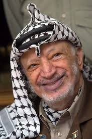

 Yes, Yasser Arafat, the famous Palestinian leader, is actually Egyptian. He was born 1929 in Cairo, Egypt, to Palestinian parents and Egyptian grandparents. When he was young, he was beaten by his father for going to the Jewish Quarter in Egypt. However, Arafat later claimed that he only wanted “to study the Jewish mentality”. Afterwards, his father sent him to Jerusalem. Arafat became the Chairman of the Palestine Liberation Organization (PLO), President of the Palestinian National Authority (PNA) and leader of the Fatah political party. He received the Nobel Peace Prize for his efforts to create peace in the Middle East in the negotiations at Oslo.